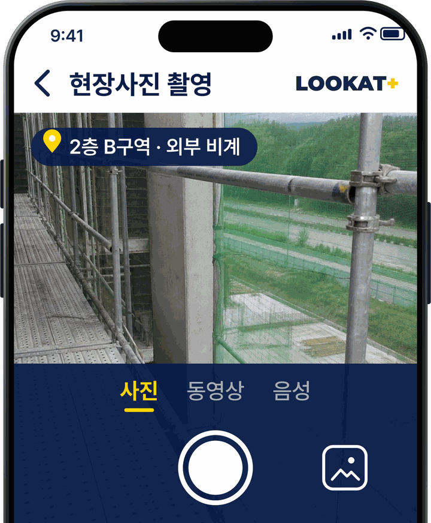
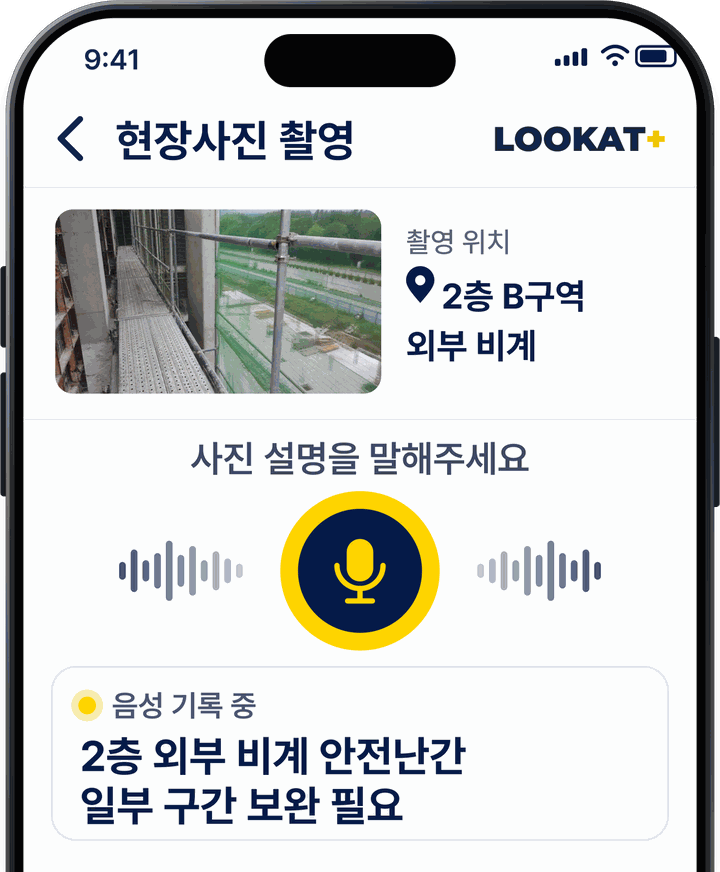
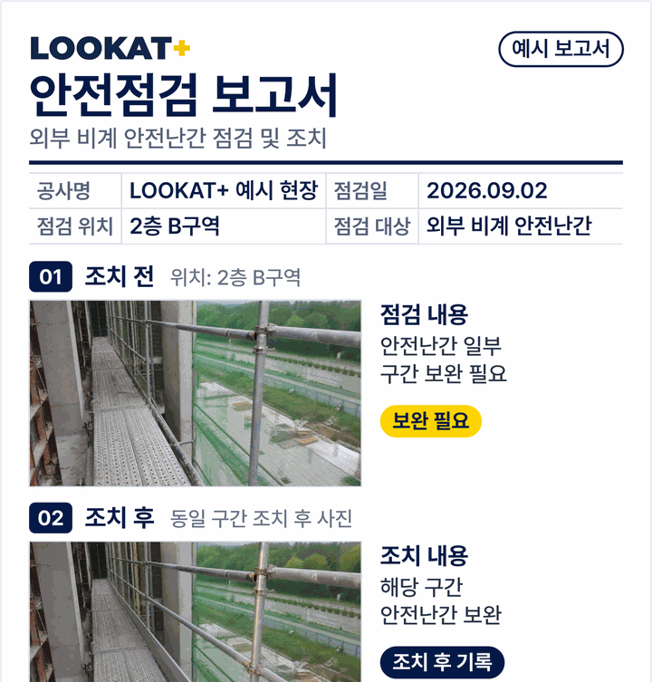

쉽고 간편한 현장관리 APP
LOOKAT NOTE
3초만에, 보고서가 완성됩니다.
현장의 사진과 음성만으로 작업일지, 점검보고서가 간편하게 완성됩니다.
-
01
사진 촬영
현장 상황을
촬영합니다.
-
02
음성 입력
찍은 사진에
설명을 말합니다.
-
03
보고서 생성
현장에 맞는
보고서가 완성됩니다.
※ 앱 화면과 보고서는 이해를 돕기 위한 예시입니다.
이런 업무에
안전점검 TBM 관리 현장 검측
회사 양식에 맞춘 보고서 설정 · 자체 커스터마이징 차후 LOOKAT 연동 가능
현장 소음에 강한 음성 인식
소음이 많은 현장에서도 정확하게 인식합니다.
기본 보고서 오프라인 생성
기본 설정된 양식으로 인터넷 없이도 보고서를 생성합니다.
※ 후가공·분석 기능은 인터넷 연결이 필요합니다.
우리 회사 양식 그대로,
현장 기록도 간편하게.
회사 양식에 맞춘 설정
작업일지 · 점검보고서 · 사진대지를
사내 양식에 맞춰 구성합니다.
자체 커스터마이징
회사 업무 흐름에 맞게
항목과 화면을 조정할 수 있습니다.
차후 LOOKAT 연동
LOOKAT 장비가 감지한 장면을
현장 기록과 함께 관리할 수 있습니다.
현장 안전관제 장비가 궁금하다면 LOOKAT 살펴보기
현장 기록을 더 간편하게 하고 싶다면?
LOOKAT NOTE 도입 문의
사용 인원과 쓰고 계신 보고서 양식을 알려주시면
맞춤 설정과 시연 일정을 안내해 드립니다.